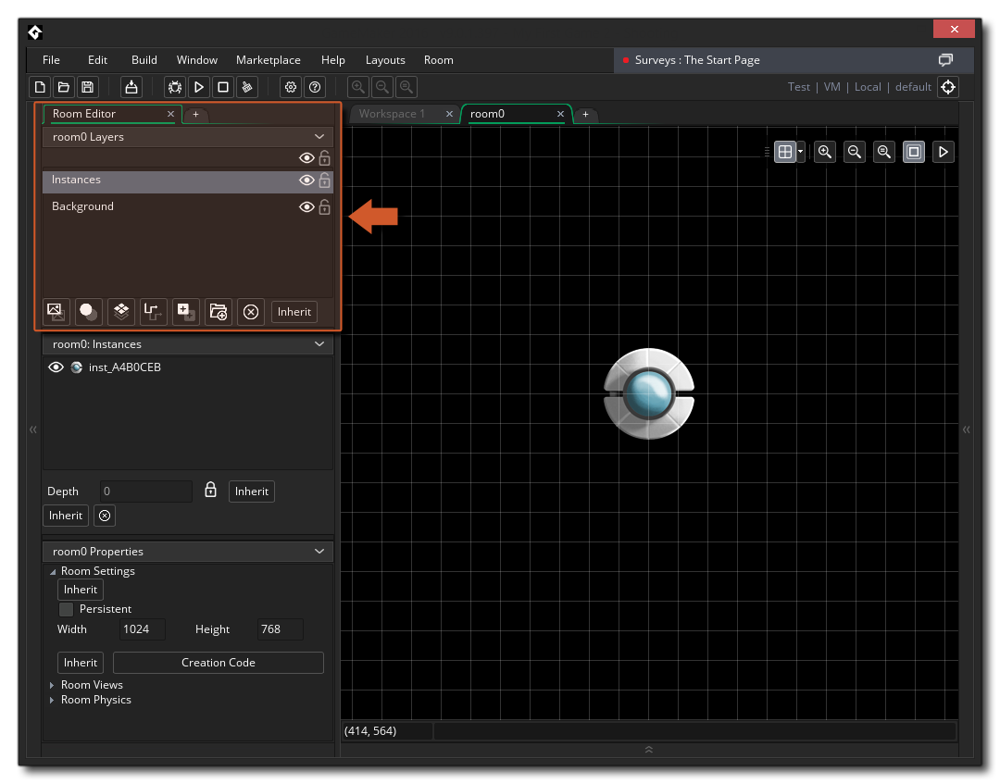
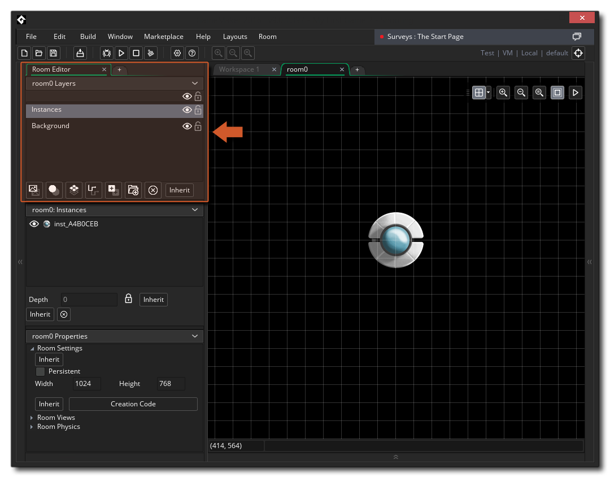
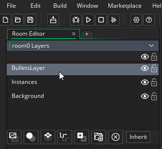
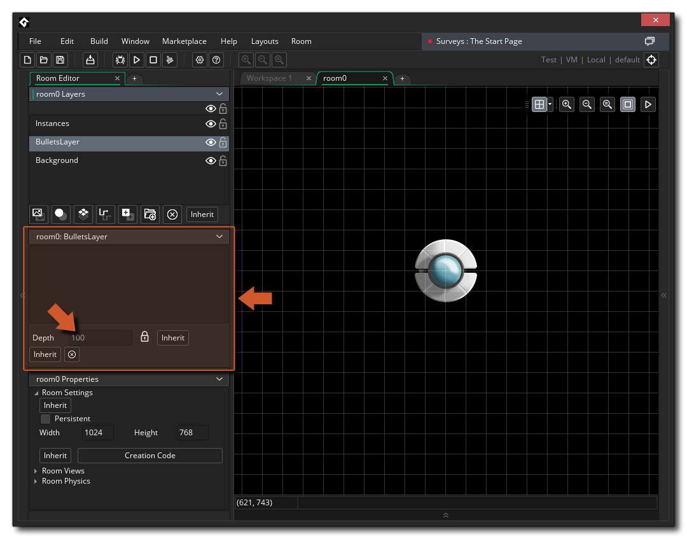
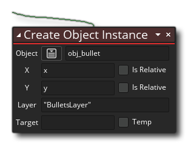

As we discussed previously, how things are drawn will depend on the layer order within the room editor, and if we want our bullets to be drawn under the player, we have to create a new layer and add them to that instead of the instance layer that the player is on.
If you open the room editor for our game room (double click  on the resource in the Resource Tree), you will see that by default the Layer Editor is shown docked to the top left of the Room Editor workspace:

on the resource in the Resource Tree), you will see that by default the Layer Editor is shown docked to the top left of the Room Editor workspace:

Currently we have two layers: "Instances" and "Background". These are the default layers created for any new room, where the background layer permits you to use a colour or a sprite for a single background image, and instances permits you to add instances in to the room.
Currently the player instance is on the "Instances" layer, and we need to add a new layer for our bullets, so click the New Instance Layer button to create a new layer and name it "BulletsLayer" (to rename a layer, simply slow-click  twice on it).
twice on it).
The layer has been created above the player layer, which means that anything assigned to it will be drawn after the player, which we don't want. To resolve this, click  on the layer and then drag it down the list until it's under the "Instances" layer, but over the "Background" layer.
on the layer and then drag it down the list until it's under the "Instances" layer, but over the "Background" layer.

Layer order is actually defined by a value, called the "depth" value. If you look at the Layer Properties window (by default under the Layer Editor) you can see this value shown, and as you change layer order it will change too. You can change this value if you wish, but by default it's locked and handled by GameMaker Studio 2 automatically.  Essentially, the higher the depth, the "nearer" the camera it is and the lower the depth the further away, so a layer at depth -200 will draw under a layer with depth 300, for example.
We need to go back to our object "obj_player" and change the creation code to look like this: 
As mentioned previously, you can use the layer name (in "" as a string) to tell GameMaker Studio 2 what layer to use, and now if you test the game again, the bullets will be created below the player object.